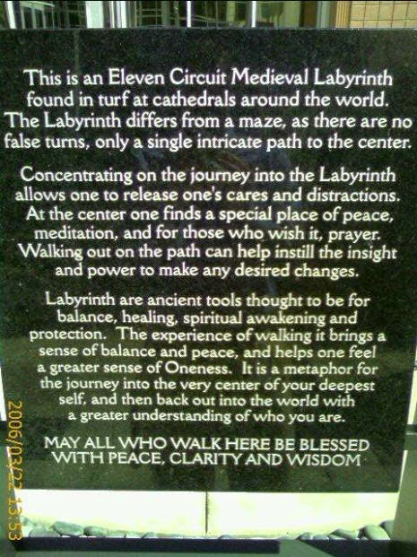
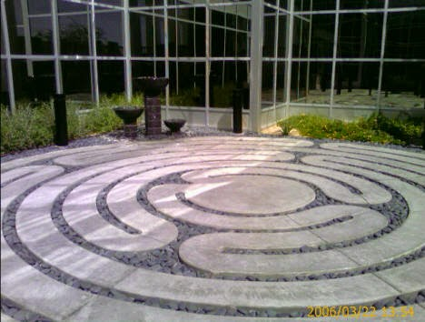

Recovered weblog entry
Labyrinth
Third night in a row staying up way too late. But this evening, I was especially preoccupied with getting everything ready with my change of e-mail address. That's right, I give up. Spam ruined my favorite e-mail address.
But not to worry! My outsidetheworld.com account came to the rescue.
I had so much on my mind to write about tonight, but it all fails me now. I procrastinated writing far too long, I'm afraid, and now all I have left in me is babble. Unmitigated verbal meandering. Oh wait, I do have a few pictures.
Below you will find a place at work that I frequent whenever I'm having a rough day. It's an eleven circuit labyrinth, and it's supposed to be a place of meditation and prayer. Kind of like Pooh's thoughtful spot, but not as cheerful or blustery. (Correction, Pooh's "Thotful Spot")
I never understood the many misspellings in the books and cartoons, but they did me no harm, so I should just be quiet.
Anyway, on to the pictures. Rather than try to remember the purpose of this labyrinth and attempt to paraphrase, I simply took a picture of what "they" said it is.


Again, you'll have to forgive the fact that these pictures were taken with my phone's camera. But, there it is. The place where you could find me if all else at work had failed. And by all else I mean a package of candy and a game of pool.
It was actually quite beautiful outside today; it was much preferable to the office environment. It was just so blasted cold inside my office. I couldn't keep warm or awake, a terrible and rare combination that leads to poor productivity. So, outside to the labyrinth I went, and was greeted by 70 degree sunshine and the chirping of birds.
I think this'll do for the evening. Have a great day and week ahead...it's almost Friday. We can make it to Friday, right? Right.
P.S. The weather widget was never right, so I removed it. 39 degrees at 11:00am? Nope. Good riddance.